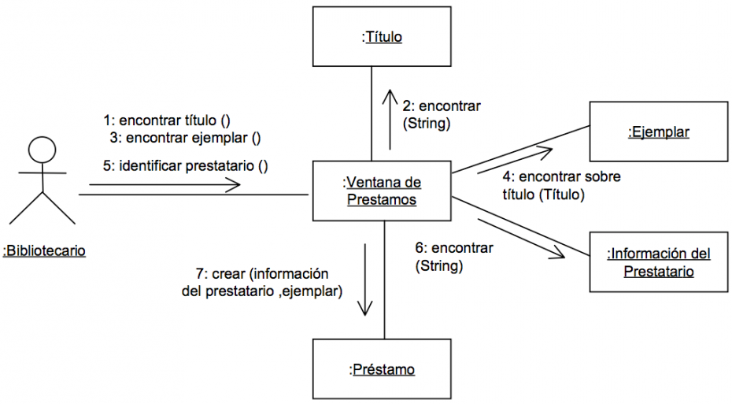

Diagrama de colaboración
El diagrama de colaboración es un tipo de diagrama de interacción cuyo objetivo es describir el comportamiento dinámico del sistema de información mostrando cómo interactúan los objetos entre sí, es decir, con qué otros objetos tiene vínculos o intercambia mensajes un determinado objeto.
Descripción
Un diagrama de colaboración muestra la misma información que un diagrama de secuencia pero de forma diferente. En los diagramas de colaboración no existe una secuencia temporal en el eje vertical; es decir, la colocación de los mensajes en el diagrama no indica cuál es el orden en el que se suceden. Además, la colocación de los objetos es más flexible y permite mostrar de forma más clara cuáles son las colaboraciones entre ellos. En estos diagramas la comunicación entre objetos se denomina vínculo o enlace (link) y estará particularizada mediante los mensajes que intercambian.
Ejemplo diagrama de colaboración:
Diagrama de colaboración para el caso de uso: Prestar un ejemplar de una aplicación encargada de los préstamos y reservas de una biblioteca.
